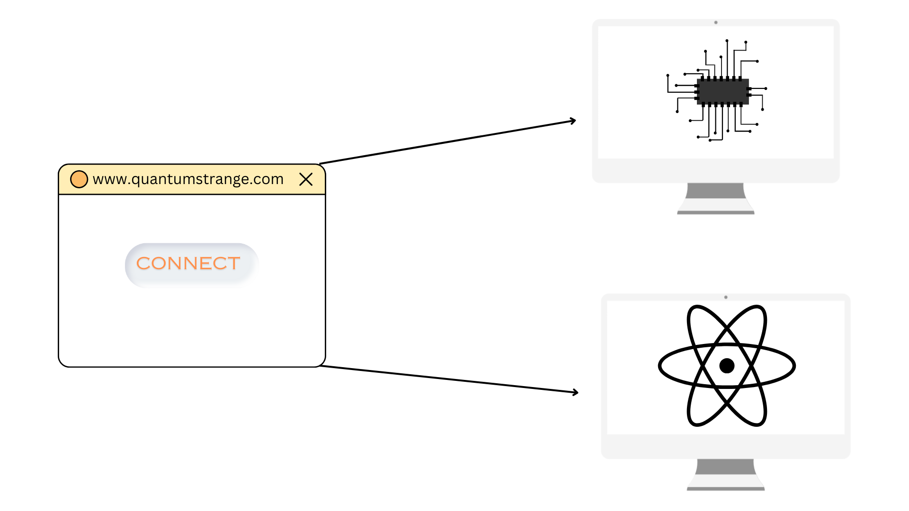

Logic and Implementation
Background:In the original story, Doctor Strange looked into an astounding 14,000,605 possible futures. If we imagine this as a massive dataset, the closest 'power of 2' that fits is 16,777,216. To explore this dataset effectively, we'd need 24 qubits(Quantum bits) circuit.
Limitations: With an increase in the number of qubits, the complexity of potential states grows exponentially. Consequently, pinpointing a specific state becomes increasingly improbable, given Grover's algorithm operates on a probabilistic basis. To strike an equilibrium between effectiveness and project objectives, we've designed an 8-qubit circuit. As our understanding of quantum computing advances, we anticipate a scalability in the circuit's complexity.
Logic:To gauge the efficiency of our system, we're focusing on measuring the number of comparisons and operations required. This provides a more reliable benchmark than tracking time, which can be influenced by the specifics of the computing platform.
We've set up a system where we treat '1' as a favorable outcome for the Avengers, and '0' as unfavorable. The objective is to pinpoint the exact future where all scenarios are favorable for the Avengers. To achieve this, we're simultaneously running a Quantum algorithm (specifically, Grover's diffusion algorithm) and a classical algorithm (Linear Search) across all possible 8-bit binary sequences. These two approaches helps us individually to identify the precise 8-bit sequence of '1s' that represents the favorable outcome. This demonstration showcases the exponential acceleration that quantum computing can bring, compared to classical computation.
We've set up a system where we treat '1' as a favorable outcome for the Avengers, and '0' as unfavorable. The objective is to pinpoint the exact future where all scenarios are favorable for the Avengers. To achieve this, we're simultaneously running a Quantum algorithm (specifically, Grover's diffusion algorithm) and a classical algorithm (Linear Search) across all possible 8-bit binary sequences. These two approaches helps us individually to identify the precise 8-bit sequence of '1s' that represents the favorable outcome. This demonstration showcases the exponential acceleration that quantum computing can bring, compared to classical computation.
